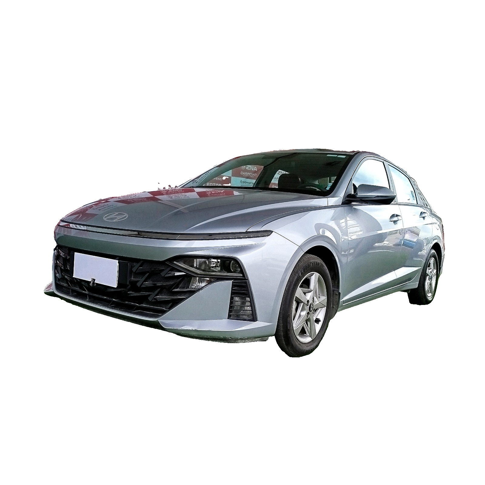
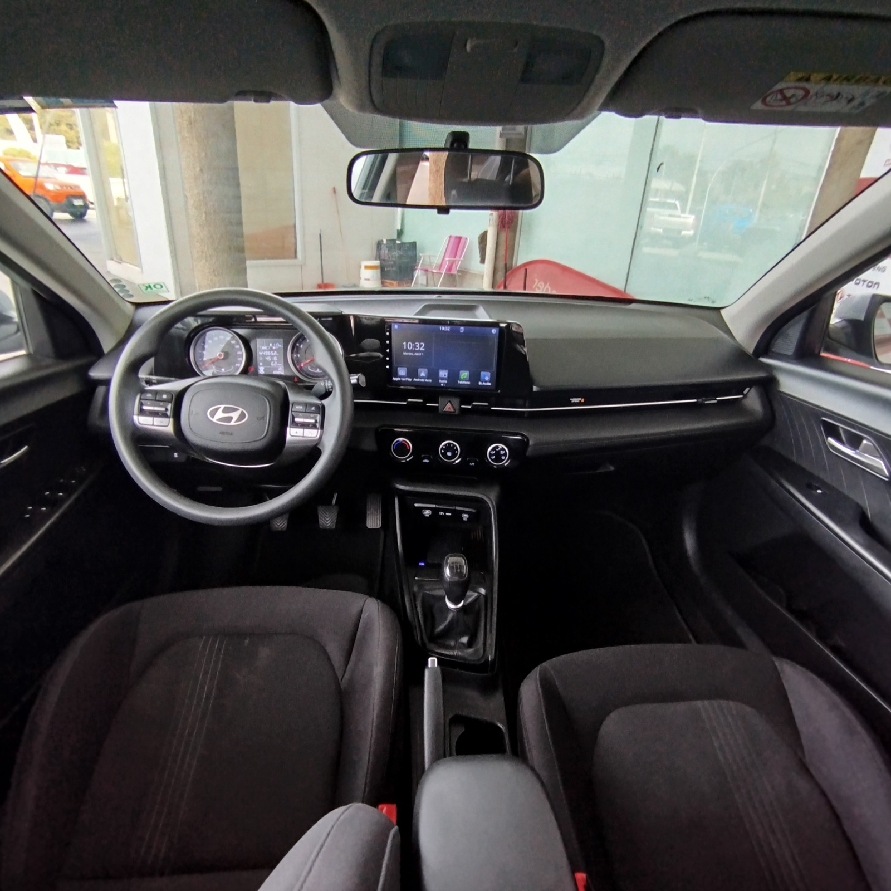
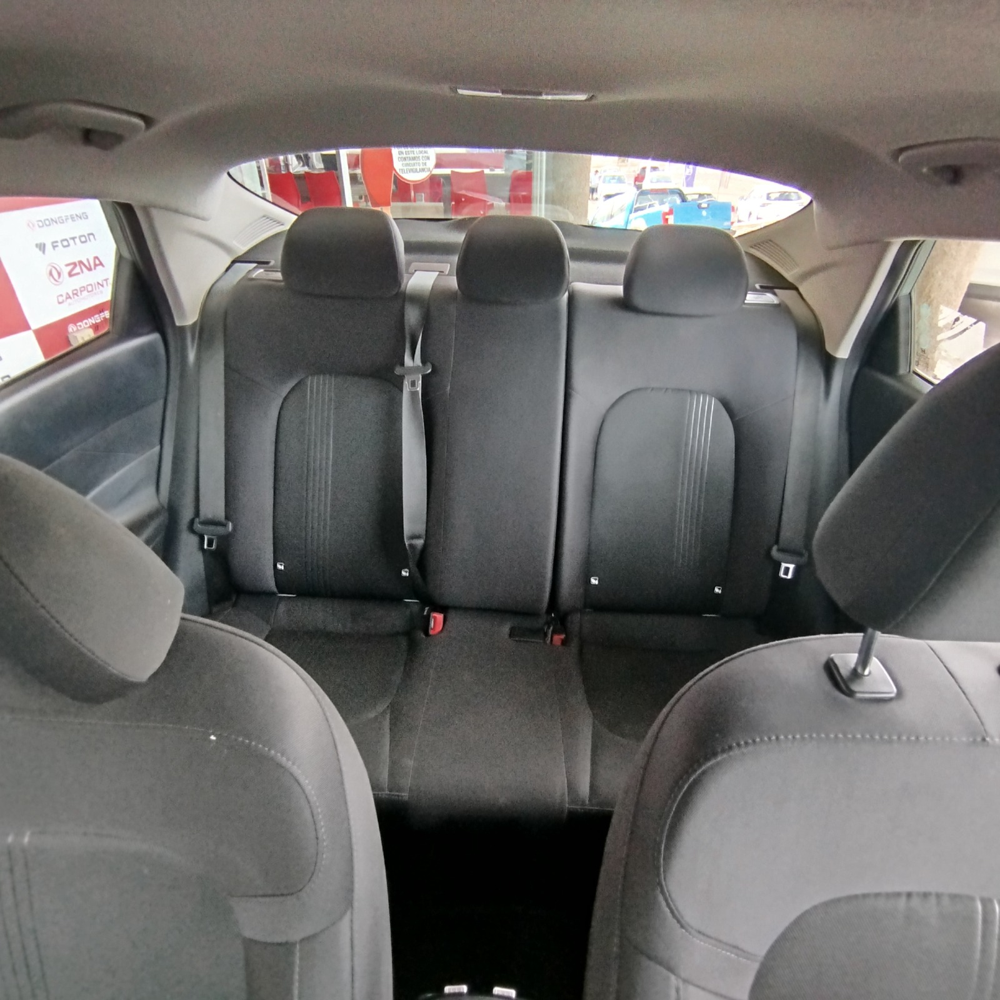
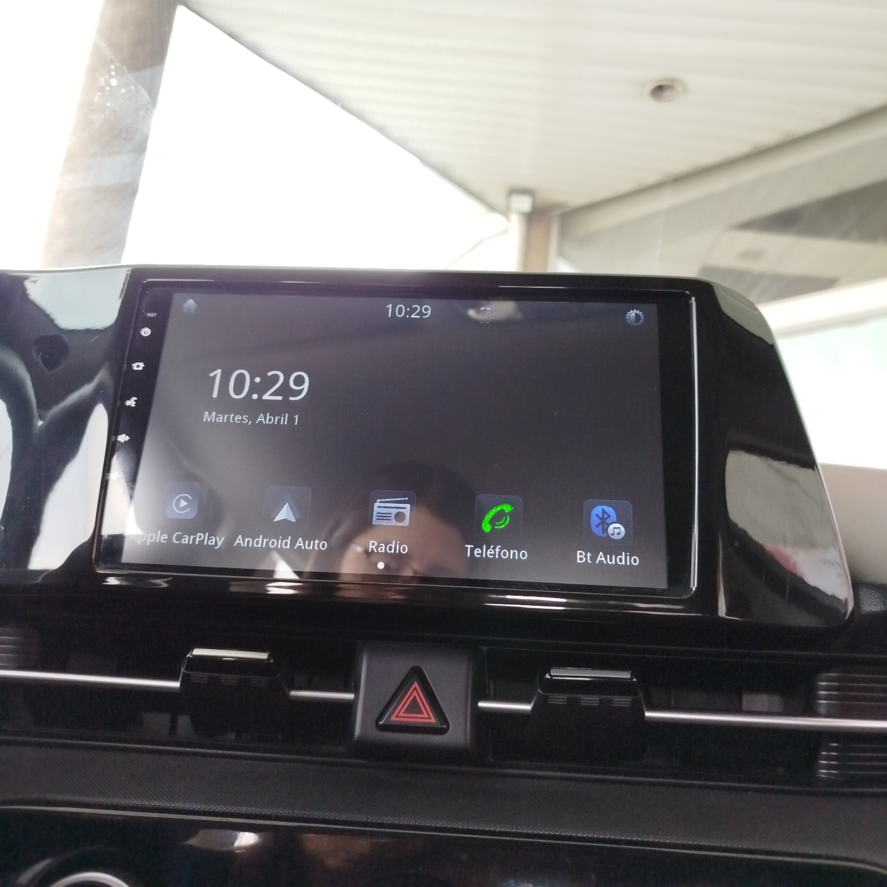
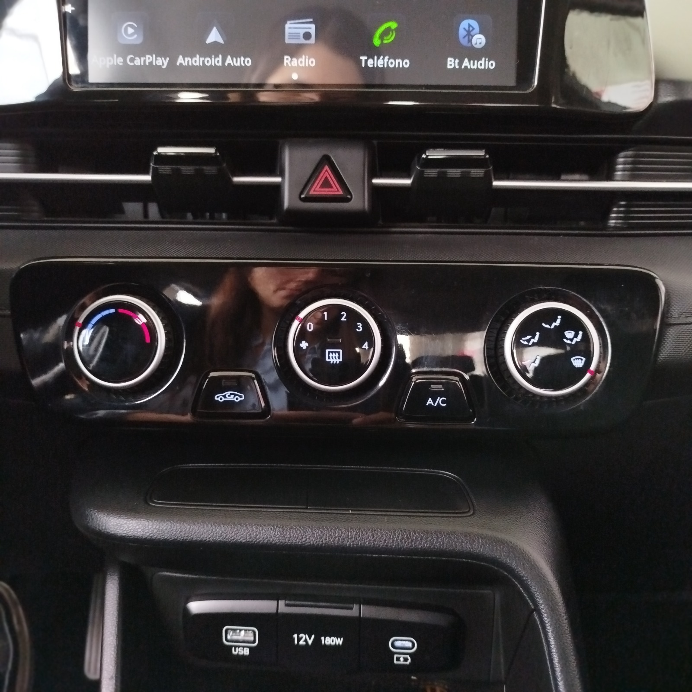

🕒
Puntualidad garantizada
Pasamos a buscarte con tiempo de sobra. Monitoreamos tu vuelo para ajustar la hora si hay cambios.
Transfer privado y puerta a puerta desde Viña del Mar, Valparaíso y Concón hacia el Aeropuerto de Santiago (SCL). Hasta 4 personas. Puntual, cómodo y seguro.

Conductor con experienciaManejo seguro y trato cercano
Vehículo aseguradoDocumentación al día
Seguimiento de vueloAjustamos la hora si cambia
Boleta o facturaComprobante de tu pago
Pasamos a buscarte con tiempo de sobra. Monitoreamos tu vuelo para ajustar la hora si hay cambios.
Auto moderno, climatizado y impecable. Espacio para tu equipaje y un viaje tranquilo de principio a fin.
Manejo seguro y trato cercano. Viajas acompañado, sin esperas ni transbordos.
Tarifa fija acordada antes de viajar. Sin sorpresas ni cargos ocultos al llegar.
Tres pasos y listo, todo por WhatsApp.
Envíanos tu fecha, hora del vuelo y dirección de retiro por WhatsApp.
Te damos el precio exacto y agendamos la hora en que pasamos por ti.
Pasamos puntual a buscarte y llegas tranquilo y a tiempo al aeropuerto.
Servicio directo al Aeropuerto Arturo Merino Benítez (SCL), de ida y de regreso. Valor por trayecto, hasta 4 personas.
* Precio por trayecto para hasta 4 pasajeros. Consulta por equipaje extra u horarios nocturnos por WhatsApp.
Consultar disponibilidadLimpio, cómodo y equipado para que tu viaje sea agradable.




Viajes reales, llegadas a tiempo.
Me pasaron a buscar puntual a las 4 de la mañana, el auto impecable y el conductor muy amable. Llegué con tiempo de sobra al vuelo.
Mi vuelo se atrasó y aun así estuvieron atentos a la hora real. Cero estrés, viaje cómodo y precio claro desde el inicio.
Viajamos cuatro con harto equipaje y todo cupo perfecto. Conductor responsable y muy buena onda. 100% recomendados.
Es por trayecto e incluye hasta 4 pasajeros, no se cobra por persona.
Hacemos seguimiento del estado de tu vuelo y ajustamos la hora de retiro sin costo adicional.
Idealmente con 24 horas. Para viajes de madrugada, mejor coordinar el día anterior para asegurar tu cupo.
Aceptamos todos los medios de pago a través de Mercado Pago (débito, crédito y transferencia) y también efectivo.
Sí. Escríbenos por WhatsApp y coordinamos un vehículo acorde a tu grupo y maletas.
Sí, te entregamos comprobante de tu pago. Avísanos si necesitas factura.
Escríbenos por WhatsApp con tu fecha, hora de vuelo y dirección. Te confirmamos al instante.
Reservar por WhatsAppo llámanos al +56 9 4904 4873
💳 Aceptamos todos los medios de pago vía Mercado Pago (débito, crédito y transferencia) y efectivo.